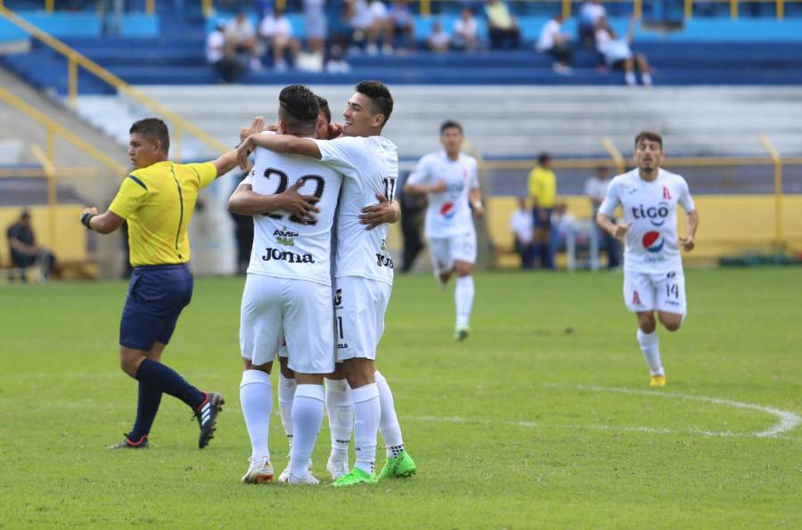

Alianza F.C. recibió la tarde de este domingo la visita de C.D. Audaz en el marco de la jornada cinco del Torneo Apertura 2018 de la Primera División. El monarca del fútbol nacional salió al engramillado del estadio Cuscatlán con la presión de obtener un triunfo luego de empatar cuatro veces consecutivas en el actual campeonato. Su delantero y figura, Rodolfo “Fito” Zelaya, abrió el marcador al minuto tres con un disparo cruzado dentro del área. Alianza mantuvo un constante acoso en el territorio de los coyotes del Audaz. Sin embargo, esto no intimidó al rival, el cual cada vez que tenía oportunidad desbordaba por el costado izquierdo. Al minuto 11, el equipo vicentino cobró tiro de esquina. El balón fue despejado por los aires por la zaga aliancista, pero fue recuperado por Elvin Alvarado, quien de zurda y sin que el balón tocase el suelo empató el choque con un potente disparo. Darío Ferreira, defensor uruguayo de los paquidermos, intentó al 26 poner de cabeza el gol del desempate. Los aficionados del cuadro capitalino pedían desde las gradas el desempate. Pasada la media hora de juego, la defensa de Alianza lució desconcentrada al dejar que los rivales llegarán al área. Aunque supo desviar tiros de peligro que pudieron modificar el marcador. Poco le quedaba al primer tiempo, cuando Bladimir Díaz, artillero colombiano del conjunto capitalino, anotó un gol. El juez de línea indicó posición prohibida y el uno por uno se mantuvo. Segundos después, antes del receso, se dio la primera sustitución. Salió Gersaín Caicedo y entró Ever Flores en las filas vicentinas. En el amanecer del segundo tiempo, el técnico albo ingresó a Rubén “El Polaco” Marroquín y Marvin Monterroza en lugar de Rudy Clavel y Herbert Sosa, respectivamente. Alianza continuó intimidando a Audaz, sin que esto se tradujera en anotaciones. Conforme el juego avanzó, los dos conjuntos mostraron un juego más agresivo. Alianza tuvo una oportunidad de poner el dos por uno al minuto 56, pues un centro desde la derecha acabó en los pies de Portillo, pero este último mandó el esférico muy arriba del travesaño. Daley Mena salió de la cancha y en su lugar llegó José Ángel “El Puma” Peña. Carlos Carrillo de Audaz se llevó una tarjeta amarilla por una entrada a Portillo. Otro en recibir la misma amonestación fue el zaguero blanco Narciso Orellana. Alianza persistió en su ataque. Llegadas al arco de los coyotes que siempre arruinaban las jugadas o interceptaban balones peligrosos. El gol de la victoria aliancista ocurrió al minuto 84. Tiro de esquina, la número cinco cayó en el área para que Iván Mancía con un cabezazo pusiera a gritar a la barra capitalina. En el tiempo de reposición, el tercer tanto estuvo a punto de aparecer. “Fito” Zelaya se quitó la marca de tres jugadores y desde la banda izquierda sacó un potente disparo que se fue fuera del arco, demasiado cerca del poste. Se escuchó el silbatazo final. Alianza celebró su primera victoria en el Apertura 2018 y llega a siete puntos en la tabla de clasificación. En la próxima fecha, la escuadra paquiderma se trasladará al occidente del país para enfrentar a Isidro Metapán y los coyotes recibirán a C.D. Águila, que ayer perdieron uno a dos ante el Jocoro F.C.
DEPORTES
19 agosto 2018
Alianza obtiene su primer triunfo en el Apertura al derrotar a Audaz
El conjunto capitalino llegó a este encuentro con cuatro empates consecutivos. En la próxima jornada se medirá ante Metapán.